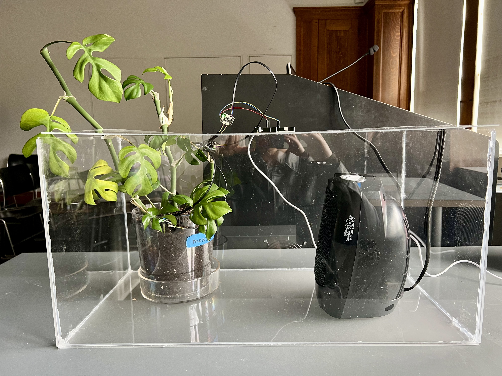
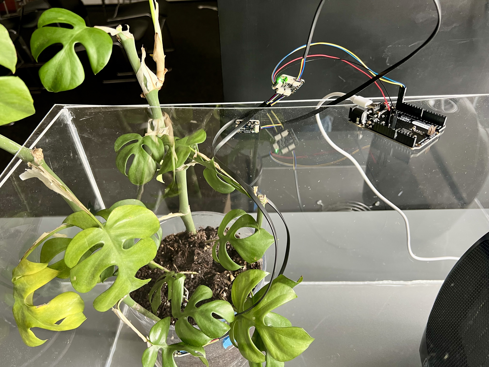
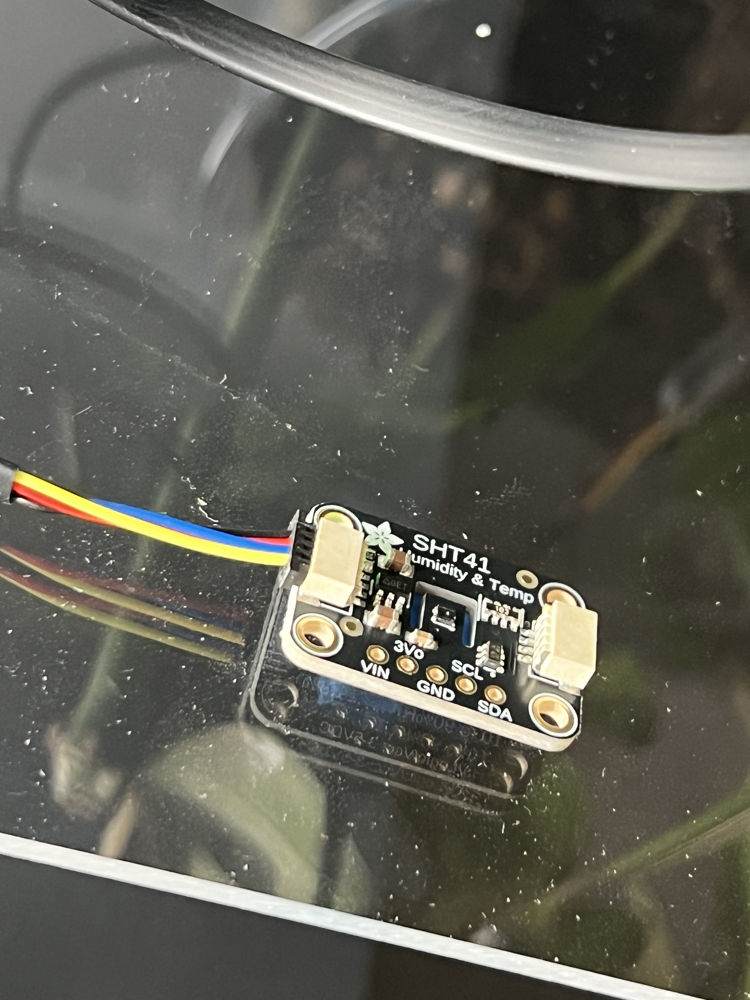
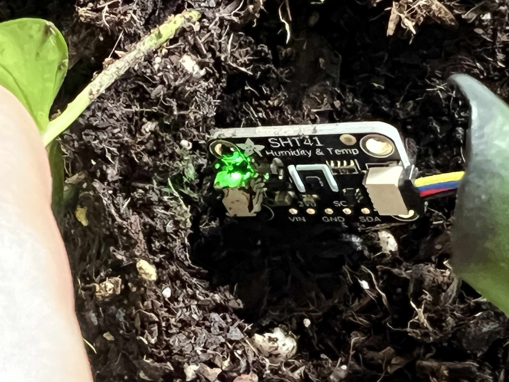
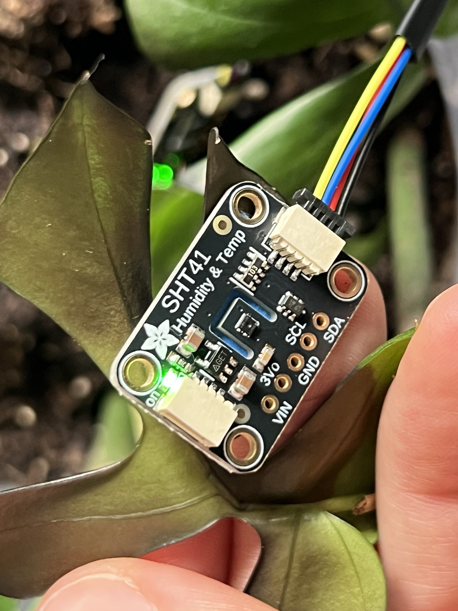
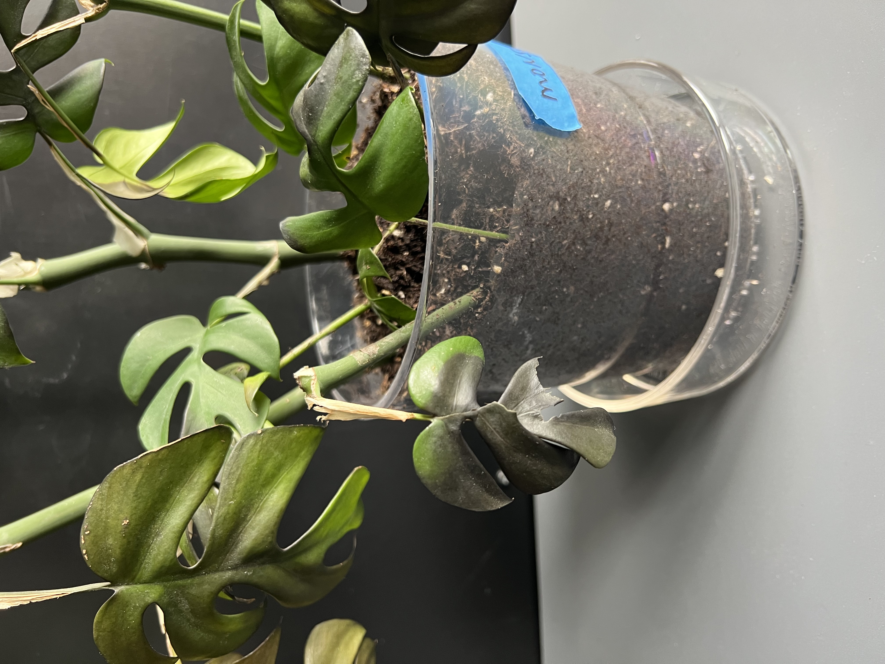

Living
Feedback

The Monstera deliciosa is placed under deliberate heat stress to reveal its latent capacity for thermoregulation — reading the plant not as decoration but as a distributed biological cooling system that actively modifies its thermal microclimate through transpiration.
Biological + Architectural Logic
The plant continuously monitors the vapor pressure differential between its internal tissue and the surrounding air, responding by modulating stomatal aperture to control the rate of water release. When heat increases, transpiration accelerates, drawing water upward through the xylem via cohesion-tension and cooling the leaf surface through evaporation. When the hydraulic system reaches its limit, stomata close — a protective signal that marks the boundary of the plant's regulatory range. The organism is never passive; it is always reading its environment and adjusting its internal state in response.
Autonomous living systems that sense, respond, and self-regulate without human intervention. The building is not a static object engineered for a fixed climate but an adaptive organism continuously negotiating with its environment, its performance emerging from biological feedback operating at scales and speeds imperceptible to human observation. Structure, enclosure, and climate system collapse into a single living material that computes its own response to the conditions it inhabits.
Abstract
Context
Globally, the last decade has been the hottest in recorded history. Sea levels are rising, coastlines are flooding, and wildfire seasons are expanding in duration and geographic reach. Climate zones are migrating faster than infrastructure can be replaced, and the building codes, material standards, and structural logics that govern the built environment were written for a climate that is disappearing. If nothing changes, cities will continue engineering for baselines that will not exist by the time a building reaches the end of its lifespan.
This experiment proposes a different premise. The Monstera deliciosa, subjected to sustained heat stress, reveals its capacity to actively cool its surrounding environment through transpiration — producing a measurable thermal response without energy input, mechanical intervention, or human instruction. The plant does not perceive heat as a crisis — it computes a response, continuously and autonomously, through biological processes that have been operating long before architecture existed. What would it mean to grow a building with organisms that already know how to respond to the conditions we are creating?
Experimentation
Question
A Monstera deliciosa is subjected to sustained heat stress from a portable space heater inside a sealed acrylic enclosure, which functions simultaneously as experimental chamber and architectural section model. Three Adafruit SHT41 Temperature & Humidity sensors are positioned to capture the thermal gradient across the system: one measuring baseline ambient conditions inside the enclosure away from the plant, one at the soil surface to record root zone thermal and humidity shifts, and one on the abaxial (underside) leaf surface facing away from the heater to measure the cooled boundary layer the plant produces.
The differential between the heater-facing environment and the leaf boundary is the primary signal — evidence of the plant computing a thermal response in real time.
| Sensor Position | Location | Signal |
|---|---|---|
| SHT41 #1 | Hot zone — nearest heater, near leaf surface | Direct thermal load; primary stress signal |
| SHT41 #2 | Root zone — at soil surface, mid canopy | Root zone thermal shift; hydraulic uptake correlation |
| SHT41 #3 | Ambient reference — far wall of enclosure | Baseline; differentials computed against this channel |
Biological + Architectural Logic
How does a plant adapt to external and internal stimuli?
The plant continuously monitors the vapor pressure differential between its internal tissue and the surrounding air, responding by modulating stomatal aperture to control the rate of water release. When heat increases, transpiration accelerates, drawing water upward through the xylem via cohesion-tension and cooling the leaf surface through evaporation. When the hydraulic system reaches its limit, stomata close — a protective signal that marks the boundary of the plant's regulatory range. The organism is never passive; it is always reading its environment and adjusting its internal state in response.
Autonomous living systems that sense, respond, and self-regulate without human intervention. The building is not a static object engineered for a fixed climate but an adaptive organism continuously negotiating with its environment, its performance emerging from biological feedback operating at scales and speeds imperceptible to human observation. Structure, enclosure, and climate system collapse into a single living material that computes its own response to the conditions it inhabits.
Methodology
Temperature · Humidity
STEMMA QT / I2C
Resolves address conflict 0x44
5-sec logging interval
750W / 1500W ceramic
Silicone-sealed, vented lid
Three SHT41 sensors are connected to the Metro RP2040 via a TCA9548A I2C multiplexer, which resolves the address conflict produced by running multiple sensors sharing the same fixed I2C address (0x44). Each sensor occupies a discrete multiplexer channel (0, 1, 2). Readings are logged every five seconds to CSV via Python/pyserial, capturing temperature and relative humidity at each position simultaneously with wall-clock timestamps.
| Phase | Duration | Heater State | Observed Signal |
|---|---|---|---|
| Baseline | 5 min | Off | All three sensors stable at ambient — root ~23°C, leaf ~18°C, hot zone ~22°C |
| Heat Stress | 5 min | On — high (1500W) | Hot zone climbs to 75°C+; leaf burn occurs almost immediately; humidity collapses |
| Recovery | 5 min | Off | Temperature declines; root zone stabilizes; leaf tissue already damaged — no normal recovery |
Molecular mechanism — Cohesion-Tension Theory: water molecules, cohesively bonded, are pulled upward through the plant's xylem by the negative pressure generated at leaf stomata as water evaporates into the surrounding air. Heat stress accelerates this pull until the system reaches a hydraulic limit and stomata close to prevent desiccation. The Monstera's distress threshold is expected around 32°C in the hot zone — legible in the data as a plateau or decline in localized humidity, marking the boundary of the plant's computational range.
Documentation






Data
Gradient
zone temp
surface temp
humidity
samples
The hot zone climbs rapidly to a peak exceeding 75°C while the leaf surface, initially cooler, rises as thermoregulation fails. The leaf burn occurred almost immediately after the heater was turned on — visible in the data as the point where the leaf temperature diverges sharply upward and humidity in the hot zone begins its collapse. The root zone remains the most thermally stable channel throughout, reflecting the hydraulic buffer of the soil system.
Response
The root zone humidity holds steady above 87% throughout — soil moisture is not the limiting factor. The hot zone humidity collapses from ~30% to below 6% under sustained heat, marking the point where the air around the leaf is too dry for transpiration to continue. The leaf surface humidity decline tracks the stomatal closure sequence: the plant's attempt to regulate is legible as a falling curve, ending where the tissue fails.
Thesis Context
The central question this experiment poses is not how to cool a building, but whether the building itself could be alive — grown rather than constructed, adaptive rather than engineered, responsive rather than prescribed. As climate zones shift beyond the parameters for which existing infrastructure was designed, the incompatibility between static built systems and dynamic environmental conditions becomes irreversible. A building grown from living material does not become obsolete when its climate changes. It responds.
The Monstera does not need to be programmed to regulate heat. It already does — continuously, autonomously, at the molecular scale. This experiment takes that capacity seriously as a design proposition: that the biological processes already embedded in living organisms represent an untapped architectural intelligence, one that operates without mechanical systems, without energy inputs, without maintenance cycles designed by humans for conditions that may no longer exist.
Against a world where the infrastructure of the twentieth century has become a liability — built for a climate that has passed, consuming energy to resist conditions it was never designed to absorb — the proposition is not adaptation through better engineering but adaptation through growth: buildings that emerge from biological feedback, that negotiate their own thermal boundaries, that evolve with the environments they inhabit rather than being abandoned by them.